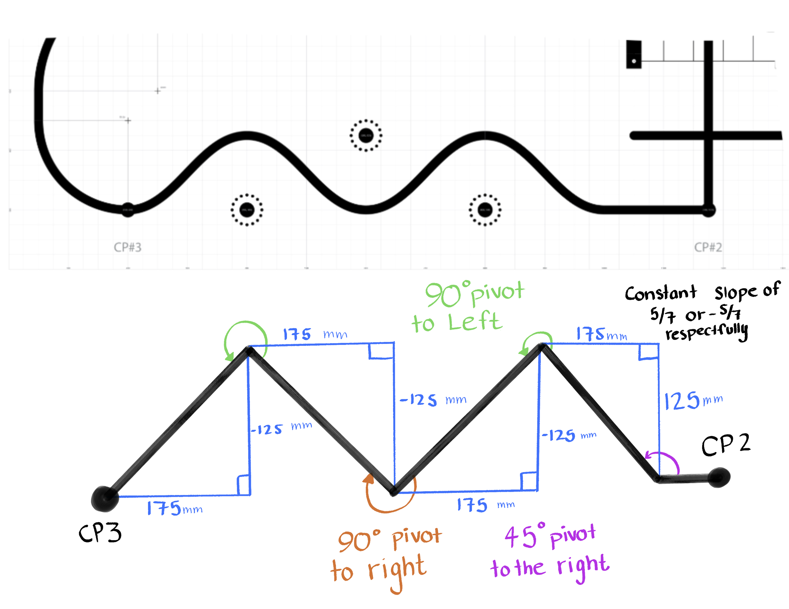

Discussion of What Worked and What Did Not¶
Looking back on the project, there are several aspects of the design that we would change, particularly in the mechanical layout. One of the main improvements would be relocating the line sensor to underneath the front of Robert rather than extending it outward. While placing the sensor in front initially helped with wiring and accessibility, the addition of the bumper sensor required us to mount it even further forward. This resulted in a “swordfish”-like geometry at the front of the robot.
This extended front made turning significantly more difficult, especially in tight areas such as the garage sequence and the zig-zag portion of the course. It also increased the likelihood of unintended collisions, as Robert would frequently contact the ping pong balls due to the extended sensor assembly.
Due to Robert’s geometry, the line sensor and bumper switches were positioned too far ahead of the main body of the robot. As a result, when approaching the ping pong ball section, the robot would make contact before the wheels had a chance to properly navigate around them. To address this, we planned to implement a zig-zag driving strategy that would allow Robert to intentionally maneuver around the obstacles rather than relying purely on line following.
Zig-Zag Path Concept¶
{kind=link}

The diagram above shows the intended zig-zag trajectory that Robert would follow to avoid the ping pong balls. This approach would allow the robot to clear the obstacles by alternating steering directions rather than driving directly through them.
However, due to time constraints, we were not able to fully implement this behavior for the final demonstration. Instead, we continued using standard line-following control, which resulted in consistent contact with the ping pong balls. Despite this, the proposed zig-zag strategy remains a viable improvement for future iterations of the design.
Another improvement we would consider is upgrading from a 5-channel line sensor to an 8-channel sensor. The limited resolution of the 5-channel sensor made line detection less robust and increased the difficulty of tuning the control system. A higher-resolution sensor would provide more accurate position data and likely improve both stability and responsiveness during line following.
One unexpected challenge we encountered was an issue with the microcontroller occasionally reverting to its original main and boot files. Approximately once or twice per hour, the robot would power on and reset to its default state after pressing the user button. This required us to re-upload our program, which slowed down testing and made debugging more difficult. However, this issue also forced us to stay organized and maintain up-to-date versions of our code, which ultimately improved our workflow.
Despite these challenges, several aspects of the project worked very well. The straight-line following at the beginning of the course was consistent and reliable, demonstrating that the control system was effective under simpler conditions. Additionally, when the garage sequence executed correctly, it performed very smoothly and efficiently. Robert was able to complete the sequence quickly and accurately without colliding with obstacles, even with the extended front geometry.
Finally, our team collaboration was a strong point throughout the project. We worked well together, actively contributing to troubleshooting, testing, and implementation. This collaborative approach allowed us to make steady progress and effectively address challenges as they arose.
---
Summary¶
Mechanical limitation: front-mounted sensors created turning challenges
Geometry limitation: extended front caused collisions with ping pong balls
Proposed improvement: zig-zag navigation strategy (not fully implemented)
Sensor limitation: 5-channel sensor reduced tracking accuracy
Unexpected issue: microcontroller resets slowed testing
Strengths: reliable straight-line tracking and strong garage performance
Teamwork: effective collaboration throughout development